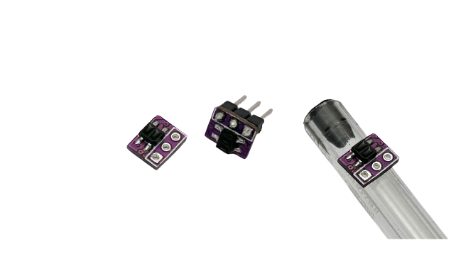

Sensor de Linha Mini
Pequeno sensor de linha ideal para robôs de Sumô 3kg, Mini, micro ou nano ou em seguidores de linha, principalmente como sensor de marcação lateral.

| Característica | Valor |
|---|---|
| Tipo de sensor | Sensor de linha analógico |
| Tensão de operação | 3,3 a 5V |
| Dimensões | 8 x 6,5 x 3,3 mm |
| Peso | 0,15 g |
Exemplo de código
// Fox Dynamics Team
// Codigo simples de leitura do sensor de linha
#define SENSOR_PIN 8
#define SENSOR_TRIG 600 // valor de transição de uma cor para outra
void setup(){
Serial.begin(115200);
pinMode(SENSOR_PIN,INPUT);
}
void loop() {
int an = analogRead(SENSOR_PIN);
Serial.print( "Leitura do sensor: " );
Serial.print( an );
Serial.print( " Cor: " );
Serial.println( an < SENSOR_TRIG ? "Branco" : "Preto" );
delay(300);
}